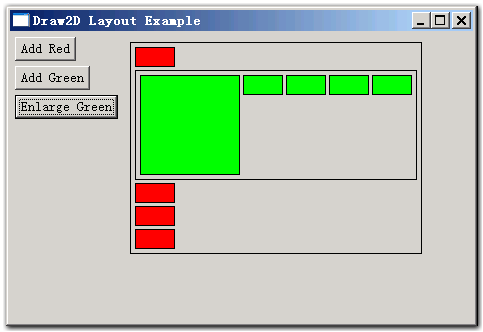

http://www.cnblogs.com/bjzhanghao/archive/2006/09/05/495747.html
就像在swt里我们使用layout来控制各个控件的摆放位置一样，在Draw2D里最好也把这个工作交给LayoutManager来做。除非是在自己实现的Layout里，一般程序里自己不要轻易使用setBounds()、setLocation()和setSize()这些方法控制图形的位置和大小，而应该在为每个图形设置了适当的LayoutManager后，通过setConstraint()和setPreferredSize()等方法告诉layoutmanager如何布局。
在需要的时候，父图形的布局管理器负责修改每个子图形的位置和大小，但计算每个子图形大小的工作可能是交给子图形自己的LayoutManager来做的，计算的方法一般是在这个LayoutManager的getPreferredSize()方法里体现。
例如当父图形使用XYLayout，子图形使用ToolbarLayout时，假设在子图形里又增加了子子图形（子图形里的子图形），add()方法会导致revalidate()的调用，这时父图形的xylayout将检查子图形是否具有constraint，如果有并且有至少一个方向为-1，则利用子图形上的ToolbarLayout计算出子图形新的尺寸，这个尺寸是和子图形里包含的子子图形的数目有关的（ToolbarLayout会把每个子图形的宽/高度加起来，加上其中间隔的空间，再考虑图形的边框，返回得到的尺寸）。
XYLayout对layout(IFigure)方法的实现：
Draw2D里Figure类的setPreferredSize(Dimension)和setSize(Dimension)的区别是，setSize()方法不会调用revalidate()方法导致重新layout，而只是调用repaint()对所涉及到的“脏”区域进行重绘（repaint）。setPreferredSize()方法可以约等于setSize()方法+revalidate()方法，因为在Figure对 getPreferredSize(int,int)的实现里，若该figure没有任何layoutmanager，则返回当前size：
只要看一下ToolbarLayout.java就会知道，ToolbarLayout对constraint是不感兴趣的，调用它的 getConstraint()永远返回null值，所以我们不必对放在使用ToolbarLayout的图形的子图形设置constraint。因此，假如我们的问题是，有图形A包含B，B包含C，要实现B（使用ToolbarLayout）尺寸随C数目多少而自动改变该如何做呢？这要看A使用何种 LayoutManager，如果是ToolbarLayout则不用做特殊的设置，如果是XYLayout则要用 A.getLayoutManager().setConstraint(B,new Rectangle(x,y,-1,-1))这样的语句为A设置constraint，对图形C则用setPreferredSize()指定实际大小。
一个Layout的例子，点此下载，截图如下。

http://images.cnblogs.com/cnblogs_com/bjzhanghao/gef/layout-example.png